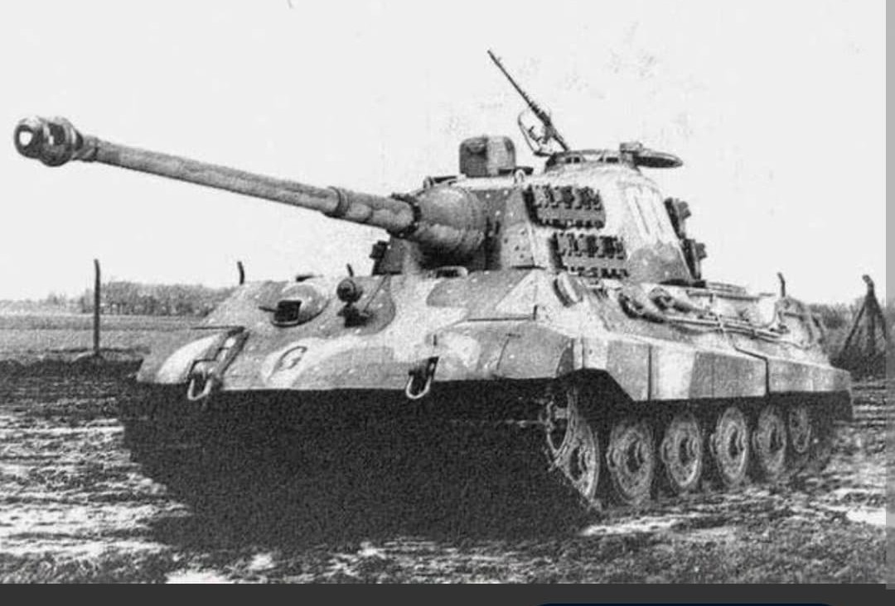
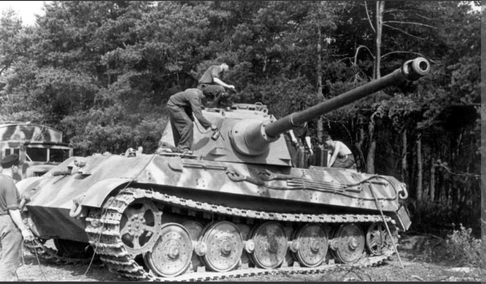
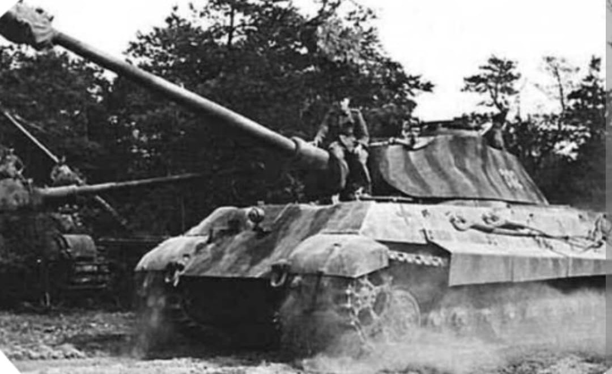

Le monstre d'acier de 70 tonnes, colosse surarmé et surblindé de la fin du Reich

Dernier-né de la lignée des chars lourds allemands, le Tiger II (Panzerkampfwagen VI Ausf. B), désigné officiellement Sd.Kfz. 182 et surnommé Königstiger (Tigre Royal), représente l'aboutissement extrême de la doctrine des chars de rupture de la Wehrmacht.
Entré en service à l'été 1944, il combine un blindage frontal quasi impénétrable inspiré de celui du Panther avec la puissance redoutable du canon de 88 mm L/71, capable de détruire n'importe quel char allié à très longue distance.
Conçu par les firmes **Henschel** (châssis) et **Krupp** (tourelle et armement), le Tiger II a été développé pour succéder au Tiger I en combinant sa puissance de feu à la géométrie à plaques inclinées introduite sur le Panzer V Panther.
Affichant un poids colossal de près de **70 tonnes**, il est armé du puissant canon de **8,8 cm KwK 43 L/71**, une pièce d'artillerie d'une précision et d'une portée phénoménales. Son blindage frontal de 150 mm, incliné à 50°, offrait une protection inégalée sur le champ de bataille. Cependant, son moteur Maybach V12 de 700 ch — le même que celui du Tiger I — s'avéra sous-dimensionné pour une telle masse, entraînant une faible mobilité tout-terrain et de nombreuses pannes mécaniques.

Le Tiger II fait ses débuts opérationnels en juillet 1944 lors de la **Bataille de Normandie** au sein des bataillons de chars lourds (Schwere Panzer-Abteilungen). Il sera ensuite massivement engagé sur le front de l'Est pour tenter de freiner l'avance soviétique, ainsi que lors de l'offensive des **Ardennes** en décembre 1944.
Virtuellement imbattable en duel frontal, le Tigre Royal souffrait néanmoins de sa consommation d'essence astronomique (jusqu'à 500 litres aux 100 km) dans un contexte de pénurie généralisée de carburant. Incapable d'être franchi par la plupart des ponts européens en raison de son poids, beaucoup d'exemplaires durent être sabordés par leurs propres équipages faute de carburant ou lors de pannes de transmission.

Produit à seulement **492 exemplaires** entre janvier 1944 et mars 1945, le Tiger II n'a pas pu inverser l'issue de la guerre en raison de la supériorité numérique et aérienne écrasante des Alliés.
Il reste néanmoins l'un des véhicules de combat les plus impressionnants et étudiés de l'histoire militaire moderne. Son châssis exceptionnellement robuste servira également de base au développement du chasseur de chars super-lourd Jagdtiger (Sd.Kfz. 186).
Page du Musée HOP WW2 – Section Véhicules Terrestres Allemands